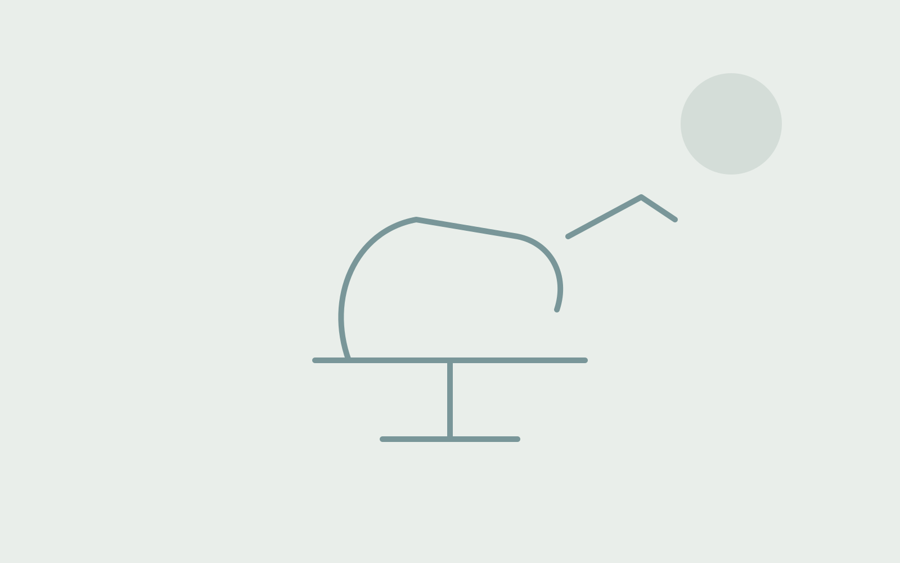
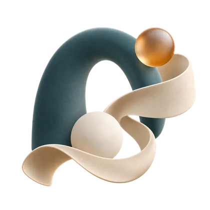
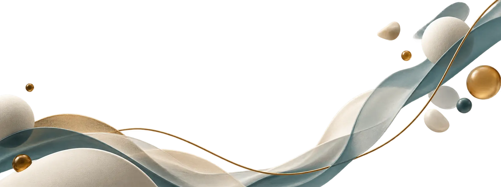
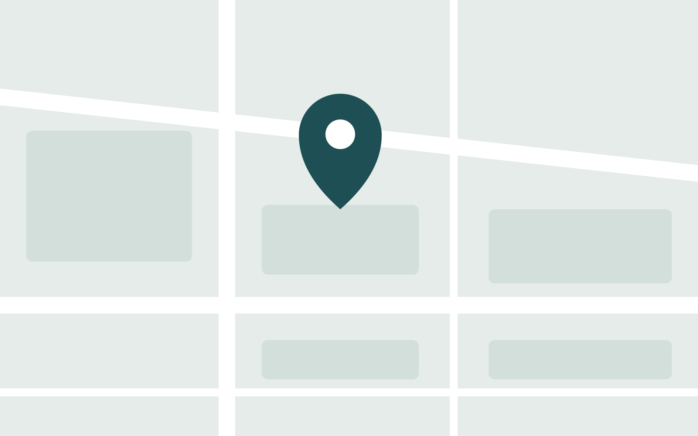

Стоматология · Светлогорье
Позаботимся о здоровье вашей улыбки
Сначала выслушаем и проведём осмотр, затем объясним варианты лечения, этапы и стоимость. Решение принимаем вместе с вами — спокойно и без спешки.

Болит прямо сейчас или произошла травма
Что можно сделать до приёма, чего делать нельзя и в каких случаях нужно ехать немедленно.

Лечение без неизвестности
Посмотрите, как проходит лечение
Для каждой услуги мы собрали понятные этапы, иллюстрации и короткое видео. Можно заранее разобраться в процессе и подготовить вопросы врачу.
 Этапы и видео
Этапы и видеоТерапия
Лечение кариеса
Врач убирает поражённые ткани и восстанавливает форму зуба пломбой из светоотверждаемого композита.
Посмотреть процесс Этапы и видео
Этапы и видеоТерапия
Лечение корневых каналов
Лечение при воспалении сосудисто-нервного пучка: каналы очищают, обрабатывают и герметично закрывают, зуб сохраняется.
Посмотреть процесс Этапы и видео
Этапы и видеоХирургия
Удаление зуба
Удаление зуба, который нельзя сохранить или который мешает лечению соседних.
Посмотреть процесс Этапы и видео
Этапы и видеоОртопедия
Коронка
Несъёмная конструкция, закрывающая зуб целиком, когда пломба уже не выдерживает нагрузку.
Посмотреть процессГигиена и профилактика
Профессиональная гигиена
Снятие налёта и камня, которые не убираются щёткой, — основа профилактики кариеса и болезней дёсен.
Посмотреть процессЭтапы и видеоИмплантация
Установка импланта
Замещение утраченного зуба искусственным корнем, на который позже фиксируется коронка.
Посмотреть процессПокрутите и загляните внутрь
Зуб, коронку и имплант можно повернуть, разрезать и разобрать на части — так проще понять, о чём говорит врач.

Записаться на приём
Оставьте телефон — администратор перезвонит в рабочее время. Заявка ни к чему не обязывает.
Или позвоните: +7 (900) 000-00-00Пн–Пт 09:00–20:00 · Сб–Вс выходные
О клинике
ООО «Ясень» — стоматологическая клиника. Здесь можно заранее познакомиться со специалистами, документами и клиникой.
- Опыт работы в городе
- 12 лет
- Адрес
- 100000, Приозёрская обл., г. Светлогорье, ул. Липовая, д. 14
- Руководитель
- Директор: Орлова Мария Сергеевна
Профили по лицензии
- стоматология терапевтическая
- стоматология хирургическая
- стоматология ортопедическая
- стоматология детская
- стоматология общей практики
- ортодонтия
- рентгенология
- сестринское дело
- организация здравоохранения и общественное здоровье, эпидемиология
Лицензия № ЛО-00-00-000000. Материалы и оборудование — на страницах конкретных услуг.
Клиника изнутри
Реальные фотографии помещений.
Врачи
Сведения о специалистах, их образовании, опыте и профессиональных документах.
Как проходит первый визит
Понятный сценарий: за что платите и что будет на приёме.
Осмотр
Врач осматривает полость рта и при необходимости направляет на снимок. Обычно около 20 минут.
План лечения
Вы получаете перечень процедур с точной стоимостью каждой и ориентировочными сроками — до начала работ.
Договор
Подписываем договор и информированное согласие. Образец договора опубликован на сайте заранее.
Лечение
Приступаем в тот же день или записываем на удобное время. Гарантийные сроки — в договоре.
Образец договора — в документах. Подготовка к приёму — для пациентов.
Частые вопросы
То, о чём обычно спрашивают по телефону. Юридические тексты — в разделах «Пациентам» и «Документы».
Раздел для пациентовКак проходит первый приём?
Врач уточнит жалобы, проведёт осмотр и объяснит возможные варианты лечения. До начала процедур вы сможете задать вопросы и согласовать дальнейшие шаги.
Как записаться?
Оставьте заявку на сайте — администратор перезвонит в рабочее время. Можно позвонить самостоятельно: номер в шапке и в блоке контактов.
Где посмотреть лицензию и документы?
В разделе «Документы» и в блоке «Лицензия» на главной странице.
Что нужно на первый визит?
Документ, удостоверяющий личность. Если есть свежие снимки — возьмите с собой. Подробнее: раздел «Пациентам → Подготовка к приёму».
Связаться и проверить отзывы
Отзывы пациентов живут на картах и профильных площадках — так требует закон о рекламе. Мы их не переписываем и не отбираем: смотрите первоисточник целиком.
Спланируйте визит заранее
Как нас найти
Адрес клиники: 100000, Приозёрская обл., г. Светлогорье, ул. Липовая, д. 14. Постройте маршрут в удобной карте и сохраните телефон администратора.
Точка назначения
ООО «Ясень»
100000, Приозёрская обл., г. Светлогорье, ул. Липовая, д. 14
Открыть в Яндекс КартахЛицензия и документы
Лицензия на осуществление медицинской деятельности
- Номер:
- ЛО-00-00-000000
- Дата выдачи:
- 01.01.2020
- Лицензирующий орган:
- Министерство здравоохранения Приозёрской области
Наведите камеру на код или откройте запись в реестре лицензий, чтобы убедиться, что лицензия действует.
Скачать выписку из реестраРаботы и услуги по лицензии
- стоматология терапевтическая
- стоматология хирургическая
- стоматология ортопедическая
- стоматология детская
- стоматология общей практики
- ортодонтия
- рентгенология
- сестринское дело
- организация здравоохранения и общественное здоровье, эпидемиология
Реквизиты
- Полное наименование
- Общество с ограниченной ответственностью «Ясень»
- ОГРН
- 0000000000000
- ИНН / КПП
- 0000000000 / 000000000
- Адрес
- 100000, Приозёрская обл., г. Светлогорье, ул. Липовая, д. 14
- Руководитель
- Орлова Мария Сергеевна